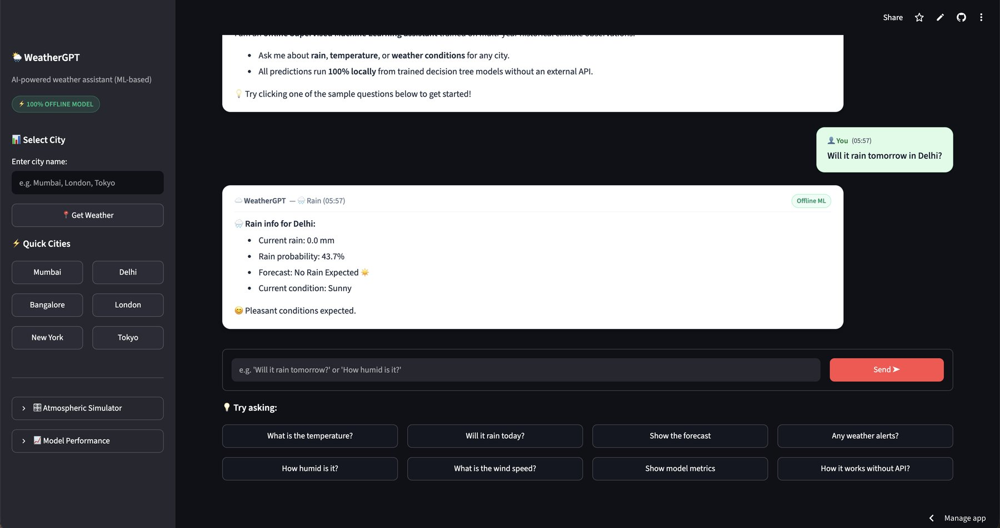
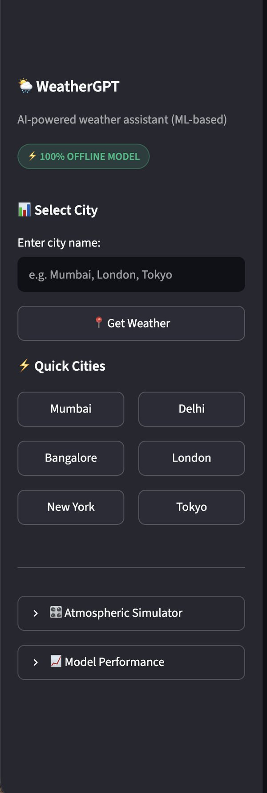
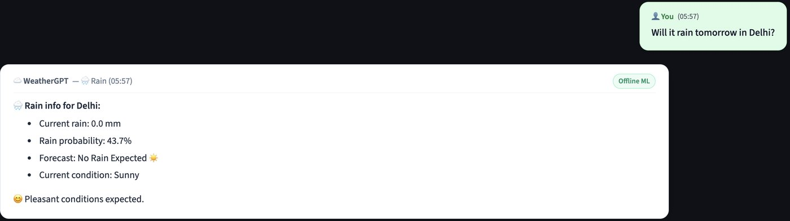
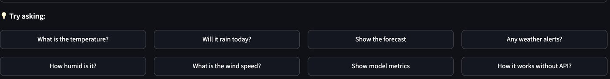

Gulshan Kishore
B.Tech CSE · AI & ML
B.Tech CSE · AI & ML project
A weather assistant that runs completely offline. Ask about rain, temperature or conditions for any city, and get an answer from machine learning models trained on historical climate data.
Sample reply · Delhi Rain probability 43.7% Forecast No rain expected · Condition Sunny

The project
WeatherGPT is a chat-style weather assistant. Type a city and a question such as "Will it rain tomorrow in Delhi?" and it replies with a weather card showing the current reading, the chance of rain, the forecast and a short summary.
It needs no weather API. There are no API keys, no subscriptions and no network calls when it answers. The models are trained ahead of time on historical observations and run locally, so the app works the same everywhere.
Along with the chat, the app has a city picker with quick buttons for Mumbai, Delhi, Bangalore, London, New York and Tokyo, an atmospheric simulator for trying your own readings, and a model performance panel that shows how well the models score.
Try it
Pleasant conditions expected.
Under the hood
A built-in language parser reads your message and pulls out the city and any readings you typed, such as temperature, humidity or pressure.
Dates are encoded as cycles so December sits next to January. Physics-inspired features are added too, such as the daily temperature range and how far pressure is from the standard 1013.25 hPa.
A regressor estimates next-day temperature. One classifier predicts whether it will rain tomorrow. A second classifier picks the weather state: Sunny, Cloudy, Rainy or Foggy.
The Streamlit chat shows the result with the model's confidence, so you can see how sure it is as well as what it predicts.
The model
A simplified walkthrough of train.py. The full file in the repo also builds the features, saves a metrics file and prints a confusion matrix for rain.
import joblib
import pandas as pd
from sklearn.ensemble import RandomForestRegressor, RandomForestClassifier
from sklearn.model_selection import train_test_split
df = pd.read_csv("data/weather_historical.csv") # about 5,470 daily rows
X, y_temp, y_rain, y_cond = make_features(df) # stand-in for src/features.py
X_tr, X_te, yt_tr, yt_te, yr_tr, yr_te, yc_tr, yc_te = train_test_split(
X, y_temp, y_rain, y_cond,
test_size=0.20, random_state=42, stratify=y_rain)The models learn from daily weather records. 80% are used for training and 20% (1,094 days) are kept back for testing. stratify keeps the share of rainy days the same in both parts.
temp_model = RandomForestRegressor(max_depth=12) # next-day temperature
rain_model = RandomForestClassifier(max_depth=10) # rain tomorrow: yes or no
cond_model = RandomForestClassifier(max_depth=10) # Sunny, Cloudy, Rainy, Foggy
temp_model.fit(X_tr, yt_tr)
rain_model.fit(X_tr, yr_tr)
cond_model.fit(X_tr, yc_tr)A Random Forest is many decision trees that vote together. There is one forest for each job: a number (temperature) and two labels (rain, weather state). max_depth limits how deep each tree grows so it does not memorise the training data.
from sklearn.metrics import mean_absolute_error, r2_score, accuracy_score, roc_auc_score
pred_t = temp_model.predict(X_te)
print("MAE", mean_absolute_error(yt_te, pred_t)) # 0.96 °C
print("R²", r2_score(yt_te, pred_t)) # 0.9830
print("Rain accuracy", accuracy_score(yr_te, rain_model.predict(X_te))) # 73.31%
print("Rain ROC-AUC", roc_auc_score(yr_te, rain_model.predict_proba(X_te)[:, 1])) # 0.7865
print("State accuracy", accuracy_score(yc_te, cond_model.predict(X_te))) # 64.99%Scores come only from the held-out 20%, so they show how the models do on new days. Temperature is off by under 1 °C on average, and rain is right about 73% of the time.
joblib.dump({
"temp": temp_model,
"rain": rain_model,
"condition": cond_model,
"features": list(X.columns),
}, "models/weather_model.pkl")The trained models are written to one file. The Streamlit app loads that file when it starts, so every answer is computed on the spot with no weather API.
Data and accuracy
The models learn from about 5,470 daily observations covering 60+ city climate profiles. The data is split 80/20, and the scores below come from 1,094 days the models never saw during training.
| Task | Model | Metric | Value |
|---|---|---|---|
| Next-day temperature | Random Forest regressor | R² | 0.9830 |
| MAE | 0.96 °C | ||
| RMSE | 1.22 °C | ||
| Rain tomorrow | Random Forest classifier | Accuracy | 73.31% |
| Precision | 0.7785 | ||
| Recall | 0.5162 | ||
| F1 score | 0.6208 | ||
| ROC-AUC | 0.7865 | ||
| Weather state | Random Forest classifier | Accuracy | 64.99% |
Temperature is predicted very closely. Rain is harder: recall of 0.52 means the model finds about half of the rainy days, which is the main area to improve with more data.
Inside the app



Tap any screenshot to enlarge it.
Built with
Developed by
Three B.Tech Computer Science and Engineering students specialising in AI and Machine Learning.
B.Tech CSE · AI & ML
B.Tech CSE · AI & ML
B.Tech CSE · AI & ML